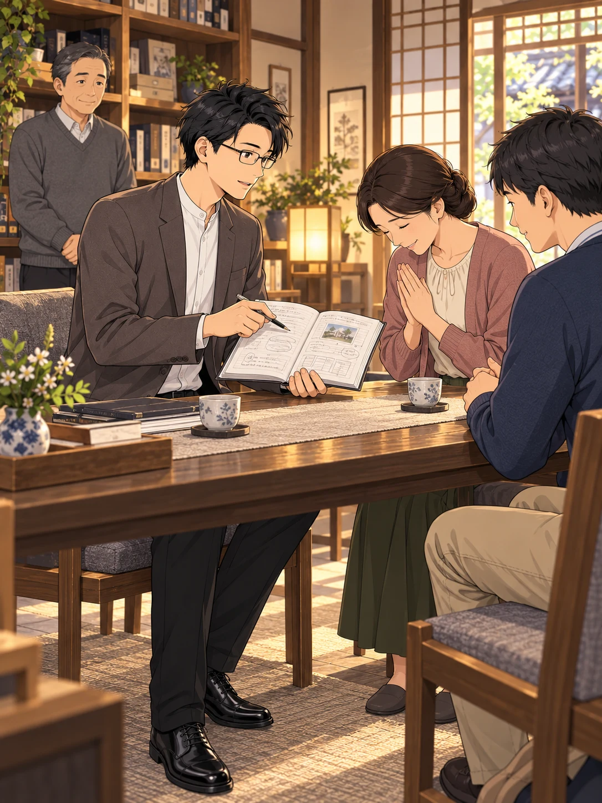
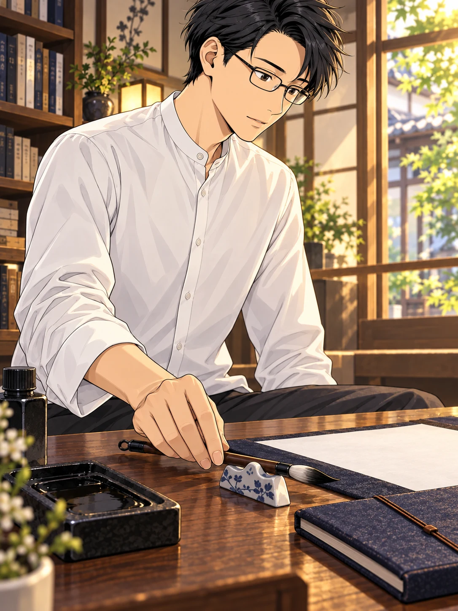

相談を受け、助言を重ねる。
感謝の言葉が返ってくることもあった。

話を聞いていただき、
ありがとうございます。
人の役に立てる。
それは、確かな喜びだった。
けれど、一人になると、
胸の奥に違和感が残った。
なぜだ……？
人の役に立っているはずなのに、
何かが違う。
その違和感の正体に、
ふと、気づいた。
私は、考えることをやめ、
「神のロボット」になっている
だけではないか？
声に従って動く。
その繰り返しの中で、
自分自身を置き去りにしてはいないか。
目に見える波紋が、
水の深さのすべてではないように。
声が聞こえる。姿が見える。
それは、入り口にすぎない。
求めるものは、その先にある。
不思議な現象そのものを、
目的にしていたのではないか。
自動書記に使っていた筆と、
書き留めてきた記録。

言葉で教わるだけではない。
自分自身が真理を
「体現」しなければ。
静かに筆を置き、
これからの向き合い方を決めた。
誰かの声に動かされるのではなく、
自分の足で、一歩を踏み出す。
奇跡に頼るな。
現象に惑わされるな。
自分自身の生き方で確かめよう。
霊現象の世界を卒業する。
それは、探求をやめることではなかった。
問いの向きが、変わった。
不思議な現象から、
現実の中でどう生きるかへ。
自分の足で、
この道を歩こう。
探求は、ここからさらに深まっていく。